![DIP Field Service app icon]()
For supervisors · Sewerage and irrigation
DIP Field Service: supervisor guide
Set up a phone, hand it to a reader, and fix the usual problems. Readers never need the gear button.
Before you start, have these ready
- Screen lock on the phonePIN, pattern, finger or face
- English voiceSettings › Accessibility › Text-to-speech
- Registration code from IT12 letters and numbers. Works once, for 24 hours
- The reader's e-mailAs it is in the reader list
- Your supervisor PIN4 to 8 numbers. Readers must not know it
- Server address
https://zApps.dipark.com/
Once per phone · about 5 minutes
1. Set up the phone
- Install the app and open DIP Field Service. Allow notifications. Unlock with the phone's lock.
- The start screen says "No reader is set for this phone". Tap the gear and type the supervisor PIN. The first time, the app asks you to choose one.
- Under Server, check the address and tap Test. Wait for Server found.
- Under This phone, type the code from IT and tap Register this phone.
- Open the gear again. In Reader on this phone, type the reader's e-mail. Leave Unlock with the phone's lock on. Tap Save.
Check: Settings says "Registered as Phone 07" and Home says "Hello" with the reader's name.
Serverhttps://zApps.dipark.com/
Test✓ Server found
This phoneRegistered as Phone 07Code needed again only if IT blocked the phone
Readerreader@dipark.com
SecurityUnlock with the phone's lock: On
Save
Example values
Every morning
2. Hand over and check the day
- Ask the reader to open the app with their own unlock. Home shows their name and how many meters are left.
- If Home shows waiting to send, the phone has readings from a place without signal. Tap Send on good signal.
- Readers tap Start for the next meter, or My zones to choose a zone. Inspectors tap Field Inspection.
- At the end of the day, open My readings › Summary. It should say "Every reading on this phone is uploaded".
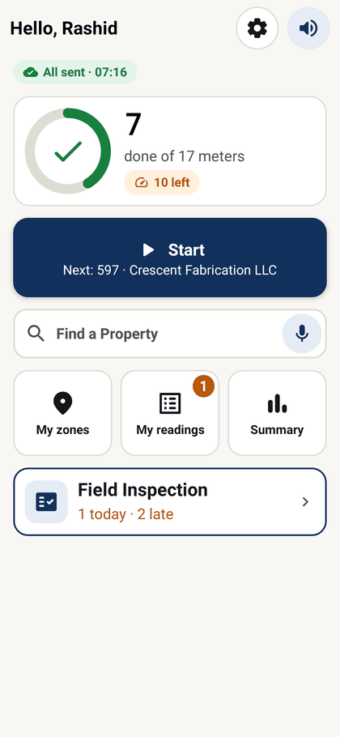
What readers do at each meter
3. A meter reading, in five screens
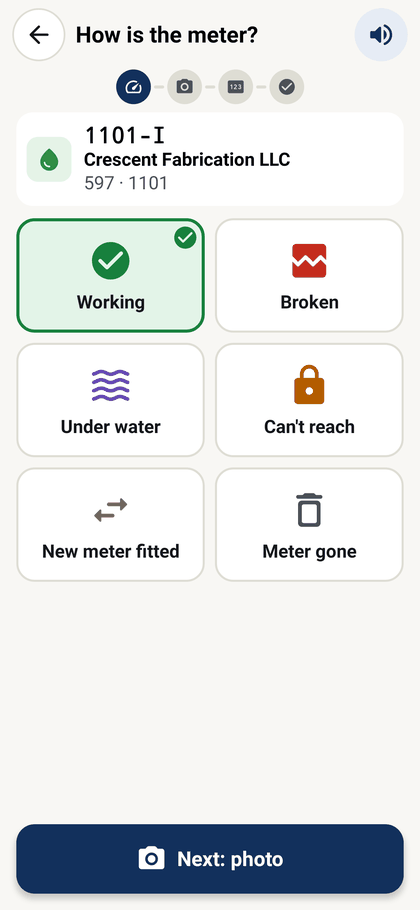
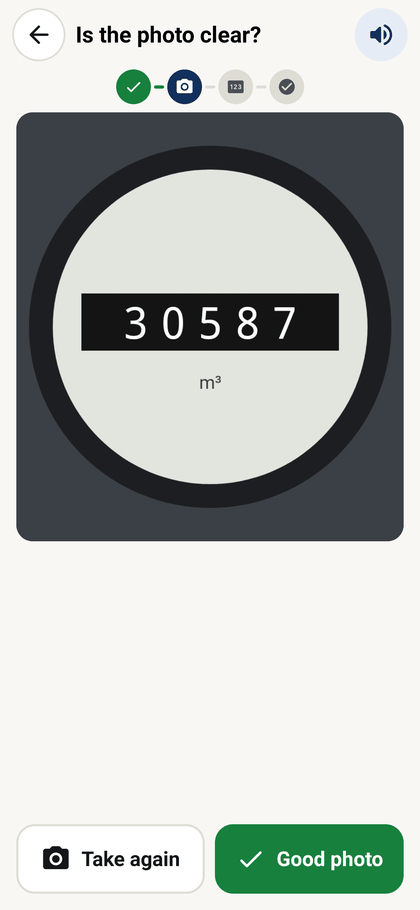
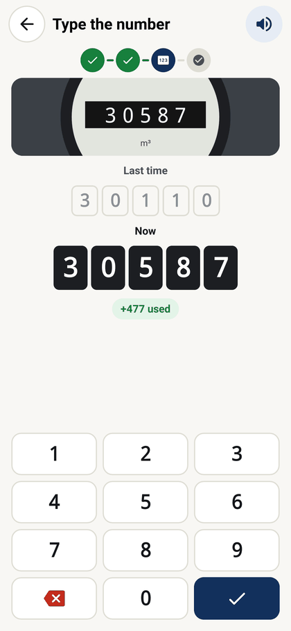
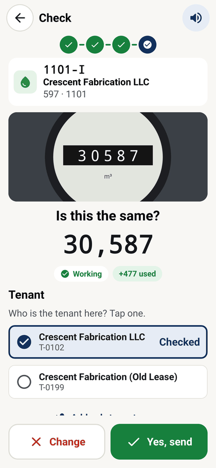
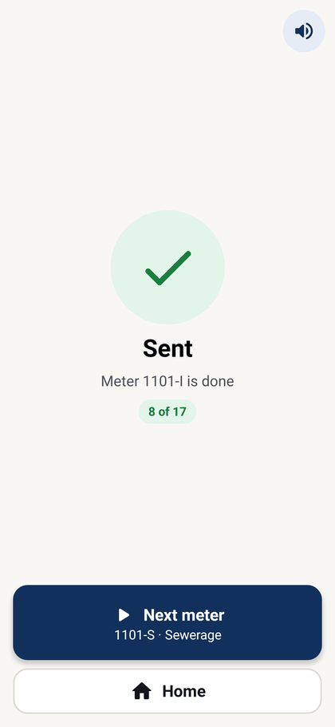
What inspectors do at each property
4. A field inspection, in four screens
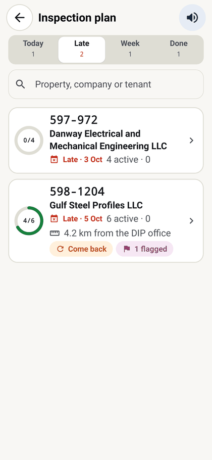
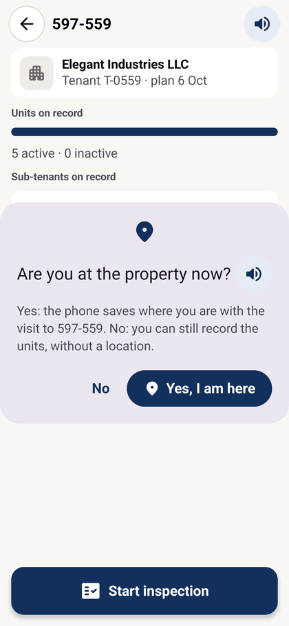
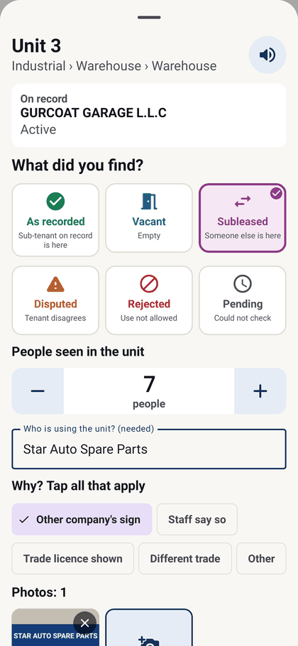
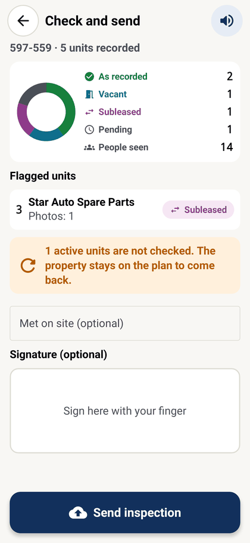
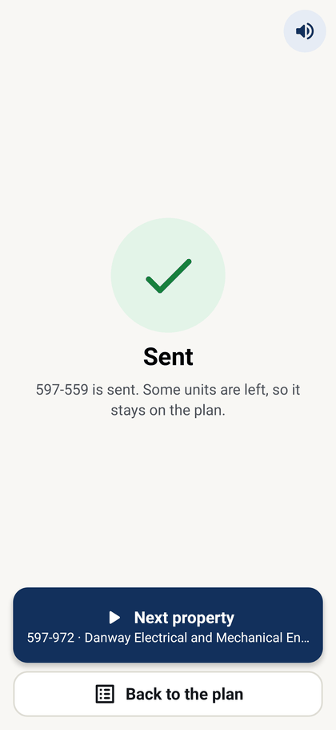
Screens from the app with its demo data
5. When the phone says…
| The phone says | Do this |
|---|---|
| No reader is set for this phone | Gear › PIN › type the reader's e-mail in Reader on this phone › Save. |
| The server did not accept this reader | Check the e-mail is spelled as in the reader list. If it is, ask IT to check the reader is active. The readings stay on the phone. |
| Server not found / Cannot reach the server | Check the signal, then that the address is https://zApps.dipark.com/. Tap Test again. |
| Code refused when registering | Codes work once and for 24 hours. Ask IT for a new one. |
| Wrong PIN · Too many wrong PINs | Wait the seconds shown, then type it again slowly. |
| This phone has no screen lock | Tap Open phone settings and set a PIN, pattern, finger or face. |
| No tenant on record. You cannot send this reading | Note the meter and tell the office. The tenant must be added in PMS first. |
| N waiting to send · Signal is back | Tap Send now. If they tap Later, it asks again in 30 minutes. |
| The phone has no English voice | Install an English voice: Settings › Accessibility › Text-to-speech. |
Never uninstall the appwhile anything is waiting to send. Waiting readings and photos would be lost.
Lost or stolen phone?Tell IT the same day so they block it. A found phone can be unblocked.
Keep the PIN to yourselfThe gear changes the server and the reader. Change the PIN in Settings if a reader learns it.
IT jobs (in MRDB): new code db/ops/new_device_code.sql · list phones db/ops/list_devices.sql · block a phone db/ops/revoke_device.sql. App updates install over the old app and keep the registration, reader, PIN and waiting work.